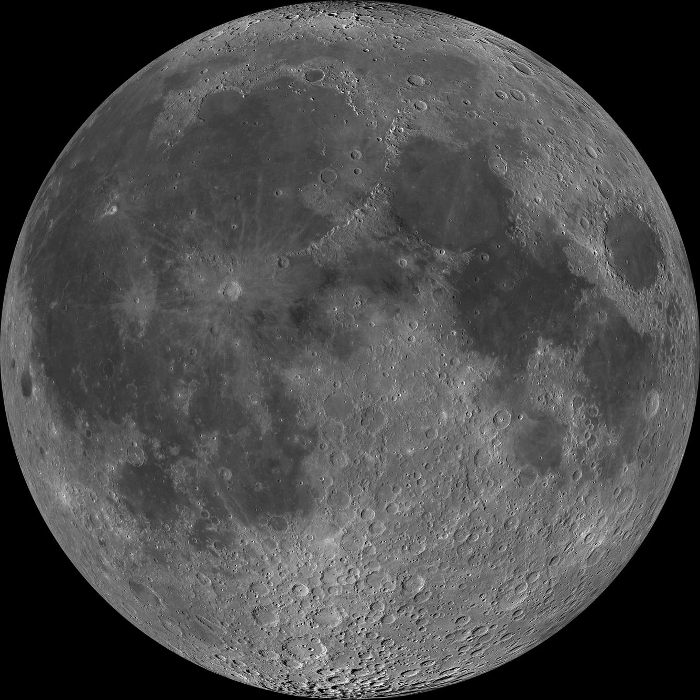

SECTOR ACTIVO: SUPERFICIE LUNAR
SELECCIONA UNA BALIZA

RED DE ESPACIO PROFUNDO // EQUIPO MAPACHE COSMOS

Alinea la antena con el haz de señal antes de que la tormenta agote la batería al 0%. Usa las teclas ← / → o los botones táctiles.